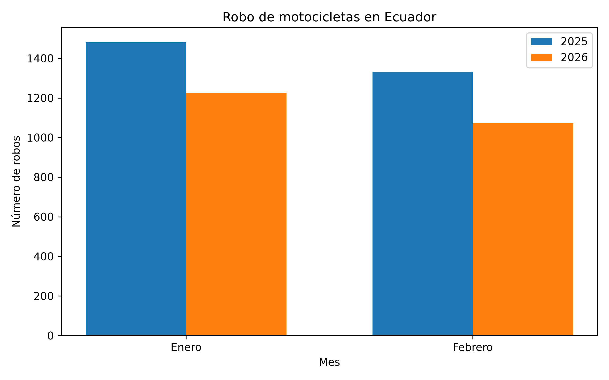

Análisis de seguridad: robo de motocicletas en Ecuador
Índice
← Volver a la página principal
1. Robo de motocicletas en Ecuador
1.1. Descripción del problema
El robo de motocicletas es uno de los delitos de mayor relevancia registrados en Ecuador, representando una problemática significativa que afecta tanto a la seguridad ciudadana como al patrimonio personal. El incremento en el uso de motocicletas como medio de transporte y herramienta de trabajo ha convertido su seguridad en una preocupación crucial.
Analizar esta problemática permite comprender su evolución, identificar tendencias y establecer comparaciones temporales para evaluar cambios en su incidencia. Este trabajo utiliza datos del Instituto Nacional de Estadística y Censos (INEC) para examinar el comportamiento de los robos de motocicletas durante los primeros meses de los años 2025 y 2026.
1.2. Definición de robo de motocicletas
El análisis considera el robo de motocicletas como un delito incluido entre los "delitos de mayor connotación psicosocial", tal como se describe en el documento Estadísticas de Seguridad Integral del INEC. Los datos analizados provienen del Sistema Integrado de Actuaciones Fiscales (SIAF) de la Fiscalía General del Estado. Este estudio tiene como objetivo comparar los registros correspondientes a los meses de enero y febrero de 2025 con el mismo periodo de 2026, evaluando la variación registrada entre ambos años.
1.3. Fuente de los datos
La información utilizada en este análisis proviene del documento Estadísticas de Seguridad Integral: delitos de mayor connotación psicosocial, publicado por el Instituto Nacional de Estadística y Censos (INEC). Los registros procesados corresponden al Sistema Integrado de Actuaciones Fiscales (SIAF) de la Fiscalía General del Estado. Esta información fue utilizada para comparar el comportamiento del robo de motocicletas en los meses de enero y febrero de los años 2025 y 2026.
1.4. Procesamiento de los datos
Para el análisis, se seleccionaron exclusivamente los registros nacionales correspondientes al robo de motocicletas durante los meses de enero y febrero de los años 2025 y 2026. Los datos fueron organizados por mes y año con el propósito de facilitar la comparación entre periodos equivalentes.
Posteriormente, se calcularon los totales acumulados para los dos meses en cada año, así como la diferencia absoluta entre ambos periodos y la variación porcentual. Estos resultados se presentaron mediante tablas y un gráfico de barras para simplificar su interpretación y el análisis comparativo.
2. Resultados
2.1. Tabla de datos
| Mes | Año 2025 | Año 2026 |
|---|---|---|
| Enero | 1481 | 1226 |
| Febrero | 1333 | 1072 |
La tabla presenta el número de robos de motocicletas registrados en los meses de enero y febrero de los años 2025 y 2026. Se observa una disminución en ambos meses al comparar los dos años.
2.2. Comparación acumulada
| Periodo | Año 2025 | Año 2026 | Diferencia absoluta | Variación (%) |
|---|---|---|---|---|
| Enero - Febrero | 2814 | 2298 | -516 | -18,3 |
En esta tabla se comparan los datos acumulados de robos de motocicletas en los meses de enero y febrero de 2025 y 2026. Los valores reflejan una disminución absoluta de 516 casos, equivalente a una variación negativa del 18,3 %.
2.3. Gráfico estadístico

Figura 1: Comparación mensual del robo de motocicletas durante enero y febrero de 2025 y 2026.
El gráfico de barras ilustra la disminución en el número de robos de motocicletas entre los meses analizados de los años 2025 y 2026, proporcionando un complemento visual a los datos presentados en las tablas.
3. Análisis
Los resultados muestran una disminución significativa en los casos de robos de motocicletas en los dos meses analizados. En enero de 2026 se registraron 255 casos menos que en enero de 2025, lo que equivale a una reducción aproximada del 17,2 %. En febrero de 2026, la diferencia fue de 261 casos menos respecto a febrero de 2025, correspondiente a una disminución del 19,6 %.
Al considerar el periodo acumulado de enero y febrero, los registros pasaron de 2814 casos en 2025 a 2298 casos en 2026, resultando en una diferencia de 516 casos y una variación acumulada negativa del 18,3 %.
Estos datos reflejan una tendencia general a la baja en los robos de motocicletas en el periodo analizado. Sin embargo, los registros no permiten establecer las causas de esta disminución. Por lo tanto, el análisis se limita a describir y comparar los datos oficiales proporcionados por el INEC y la Fiscalía General del Estado.
4. Relación con sistemas tecnológicos
Los sistemas tecnológicos representan herramientas importantes en la prevención y la respuesta ante el robo de motocicletas. Entre estas tecnologías destacan los dispositivos de rastreo GPS, los sensores de movimiento, las alarmas conectadas y las aplicaciones móviles que notifican al propietario de incidentes en tiempo real.
Las cámaras de seguridad también desempeñan un papel esencial al aportar evidencia sobre la ocurrencia y las características del delito. Adicionalmente, las bases de datos nacionales de vehículos robados facilitan el intercambio de información, así como la verificación de motocicletas, números de chasis y motores.
Si bien estas tecnologías no eliminan por completo el riesgo de robo, contribuyen a mejorar la detección, la localización de vehículos robados y la disponibilidad de información para realizar denuncias y apoyar las investigaciones correspondientes.
5. Conclusiones
- Los registros de robos de motocicletas disminuyeron durante los meses de enero y febrero de 2026 en comparación con el mismo periodo de 2025.
- El total acumulado pasó de 2814 casos a 2298 casos, lo que representa 516 registros menos y una variación negativa del 18,3 %.
- Las tablas y el gráfico facilitaron la comparación de los periodos analizados. Por otro lado, las herramientas tecnológicas pueden contribuir a la prevención, detección y localización de vehículos robados.
6. Referencias
- Instituto Nacional de Estadística y Censos (INEC). Estadísticas de Seguridad Integral: delitos de mayor connotación psicosocial. Febrero de 2026.
- INEC: Estadísticas de Justicia y Crimen
- Fiscalía General del Estado: Analítica